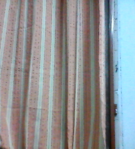

googel icon
vs
mobilenet

output on google lens-curtain
output on mobilenet-window shade
result - google lens is more accurate
result - google lens is more accurate
output on google lens-mobile
output on mobilenet-cell
result - both are correct
result - both are correct

output on google lens- watch
output on mobilenet-analog clock
result - google lens is more accurate
result - google lens is more accurate

output on google lens-book
output on mobilenet-book
result - same results
result - same results